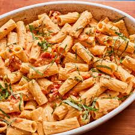

pasta

Pasta is a delicious, go-to meal you can throw together in minutes. But cooking it with the "just right" al dente texture—chewy, firm, and fork-tender—takes technique. Follow these simple steps and you'll be nailing it like nonna in no time.
Ingredients
- Water
- large pot
- Pasta
- Salt
- tongs
- colander
Steps
- Boil water in a large pot. To prevent pasta from sticking together, use at least 4 quarts of water for every pound of noodles.
- Salt the water with at least 1 tablespoon, and more is fine. The salty water adds flavor to the pasta.
- Add pasta Pour pasta into boiling water. There's no need to break the pasta; it will soften up within 30 seconds and fit into the pot.
- Stir occasionally As the pasta starts to cook, stir it well with the tongs so the noodles don't stick to each other (or the pot).
- Test the pasta by tasting it. Follow the cooking time on the package, but always taste pasta before draining to make sure the texture is right. Pasta cooked properly should be al dente—a little chewy.
- Drain Drain cooked pasta well in a colander. If serving it hot, add sauce right away; if you're making a pasta salad, run noodles under cold water to stop the cooking.